Sesión 2 - Creación de un agente en Mistral AI
1. Contexto de la sesión
En la sesión anterior (LLM01) vimos:
- Qué es un LLM y cómo funciona a alto nivel.
- Conceptos de tokens, ventana de contexto, system prompt y alucinaciones.
- Un primer ejemplo de interacción tipo chatbot.
En esta sesión damos un paso más: vamos a crear y utilizar un agente en Mistral AI, apoyándonos en la API de Agents y Conversations.
La idea clave es pasar de “hablar con un modelo” a “definir un asistente con rol, memoria y comportamiento propios”.
2. Objetivos de la sesión
Al finalizar esta sesión, el alumnado será capaz de:
- Explicar la diferencia entre modelo, agente y conversación en Mistral AI.
- Crear un agente básico en la plataforma de Mistral con instrucciones adaptadas al curso.
- Invocar ese agente desde Python usando el cliente oficial de Mistral.
- Observar cómo cambia la experiencia frente a un simple chatbot directo sobre el modelo.
Agentes IA
Los agentes IA son entidades artificiales que pueden percibir y actuar de forma autónoma sobre el entorno circundante para lograr objetivos específicos.
- Los agentes IA no es algo nuevo
- Los antiguos agentes funcionaban con reinforcement learning (aprendizaje por refuerzo)
- Agentes poco flexibles, estados y acciones predefinidas
Ejemplo: Un agente que aprende a moverse en una cuadrícula para alcanzar un objetivo evitando obstáculos.
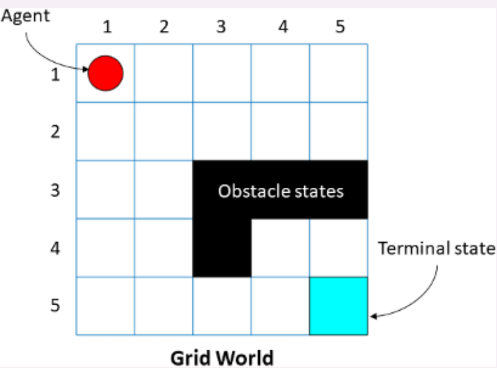
Agentes LLM
Son agentes que usan LLMs como el cerebro. Se puede ver como una forma de extender los LLMs permitiéndoles interactuar con herramientas y entornos externos.
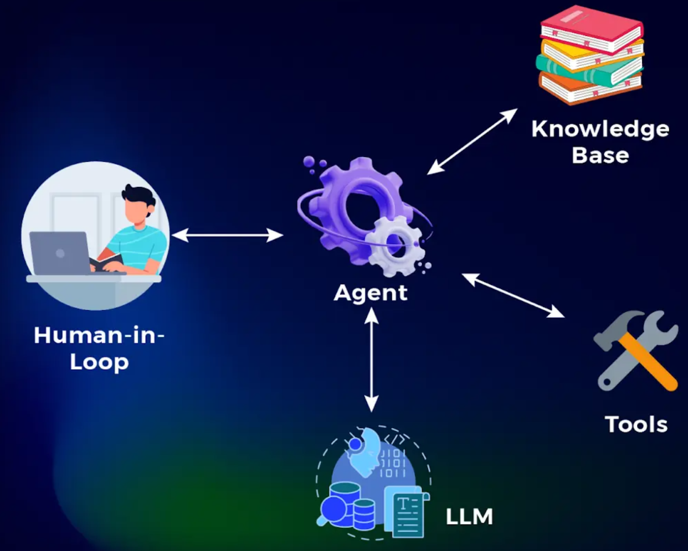
Arquitectura interna de un Agente LLM:
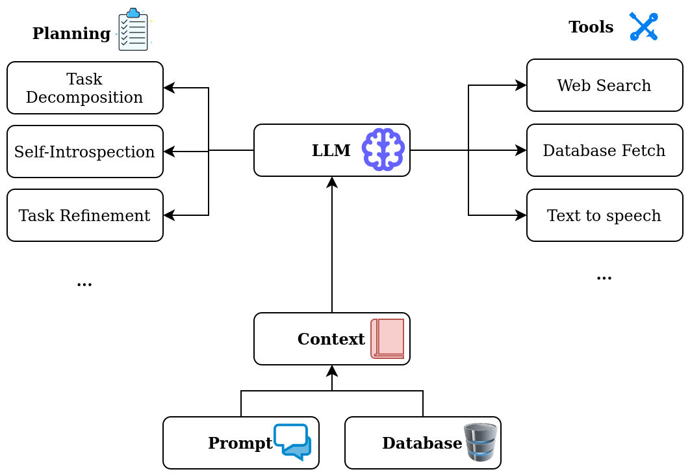
Tienen tres componentes:
- Planificación:
- Subobjetivos y descomposición: El agente divide las tareas grandes en subobjetivos más pequeños y manejables, lo que permite una gestión eficiente de tareas complejas.
- Reflexión y perfeccionamiento: El agente puede autocriticarse y reflexionar sobre sus acciones pasadas, aprender de sus errores y perfeccionarlos para los pasos futuros, mejorando así la calidad de los resultados finales.
- Memoria:
- Memoria a corto plazo: utiliza la memoria a corto plazo del modelo para aprender.
- Memoria a largo plazo: Esto proporciona al agente la capacidad de retener y recordar información (infinita) durante períodos prolongados, a menudo aprovechando un almacenamiento vectorial externo y una recuperación rápida (RAG).
- Percepción y acción (uso de herramientas - tools):
- El agente aprende a llamar a API externas para obtener información adicional que falta en los pesos del modelo (que a menudo son difíciles de cambiar después del preentrenamiento), incluyendo información actual, capacidad de ejecución de código, acceso a fuentes de información propietarias y más.
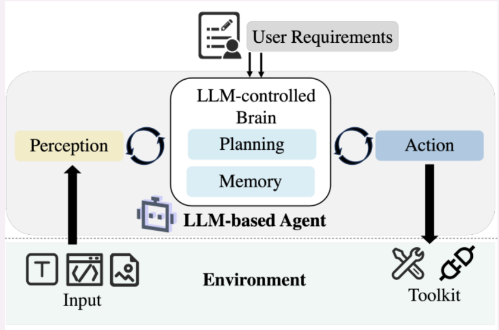
Descripción general de un sistema de agente autónomo basado en LLM:
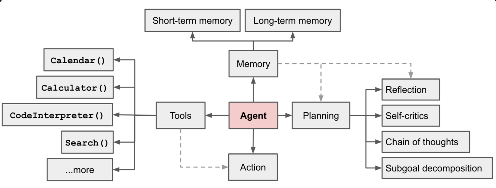
Un ejemplo es el agente de GitHub Copilot:
- Usa un LLM como motor principal (se puede seleccionar el LLM).
- Percibe el contexto: ficheros del proyecto actual e incluso puede estar conectado con herramientas externas.
- Actúa sugiriendo líneas, funciones completas o tests.
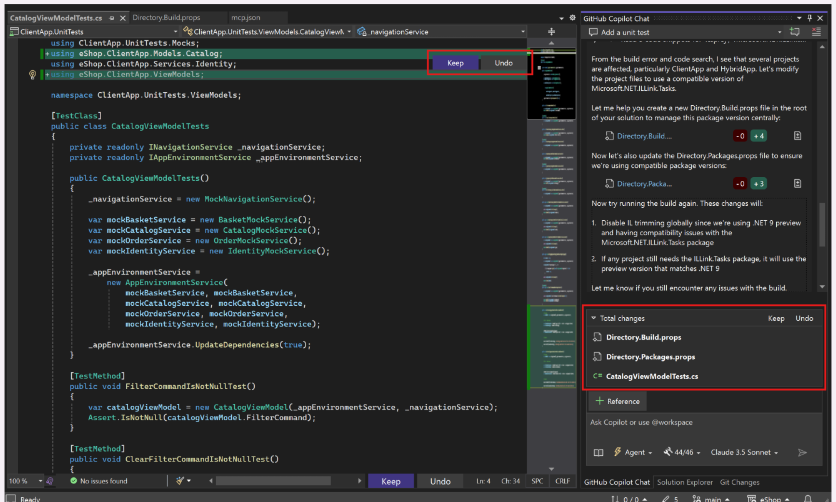
Patrones agénticos
Los patrones agénticos organizan cómo interactúan esos tres componentes (plan, memoria y percepción/acción).
Vamos a ver los más usados:
- ReAct (Reason and Action): el LLM genera trazas de thought, action y observation
- CodeAct: es como ReAct, pero las acciones son llamadas programáticas a APIs (smolagents)
- Planning first: primero se genera un plan completo explícito y se ejecuta poco a poco
ReAct
ReAct es una estrategia muy sencilla e intuitiva. Dada una user request, el sistema sigue un bucle que genera:
- Thought: razonamiento interno
- Action: llamada a una herramienta
- Observation: resultado devuelto por la herramienta hasta que la respuesta final es obtenida.
La plantilla de indicaciones de ReAct incorpora pasos explícitos para que LLM piense, con un formato aproximado como:
Thought: ...
Action: ...
Observation: ...
... (Repeated many times)
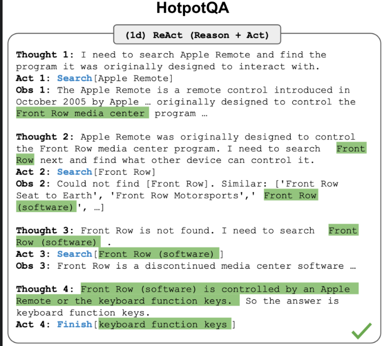
{kind=link}
ReAct: ejemplo
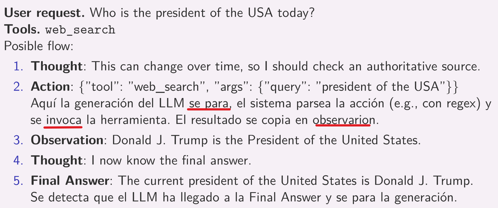
Ejemplo de consulta a un agente pidiendo información actual donde la información no está actualizada:
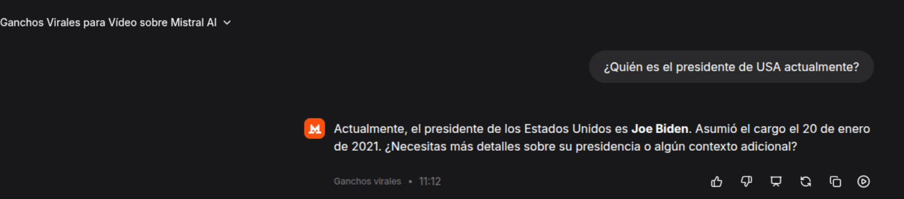
3. Conceptos clave en Mistral AI
3.1. Modelo vs. Agente
- Modelo: red neuronal entrenada para completar texto, traducir, razonar, etc.
-
Agente (en Mistral AI): configuración reutilizable que envuelve un modelo y añade:
-
Instrucciones (system prompt persistente).
- Parámetros (temperatura, estilo, etc.).
- Opcionalmente, tools o integraciones adicionales.
Trabajar directamente con el modelo es suficiente para un chatbot simple, pero repetir siempre las mismas instrucciones y parámetros en cada llamada no es práctico.
Un agente permite centralizar esa configuración y reutilizarla.
3.2. Conversación
En Mistral, una conversación (Conversation) es la entidad que:
- mantiene el historial de mensajes,
- guarda el contexto,
- y representa el diálogo entre usuario y asistente.
Características:
- Las conversaciones se pueden iniciar a partir de un agente (usando
agent_id) o directamente con un modelo. - Cada mensaje nuevo se añade como una entrada (entry) en la conversación.
3.3. Entradas (Entries)
Una entrada representa una acción dentro de la conversación:
- mensajes del usuario,
- respuestas del asistente,
- o actualizaciones generadas por otras operaciones.
El API de Mistral permite:
- crear una conversación inicial con una lista de entradas,
- añadir nuevas entradas,
- recuperar el estado de la conversación.
4. Crear un agente a través de Mistra AI
En Mistral AI disponemos de una API de Agentes y chats (conversaciones) la cual permite a los desarrolladores crear dichos agentes, aprovechando múltiples funciones como:
- Múltiples modelos multimodales, tanto de texto como de visión.
- Estado persistente entre conversaciones.
- Capacidad para mantener conversaciones con modelos base, un solo agente y múltiples agentes.
- Herramientas de conexión integradas para la ejecución de código, búsqueda web , generación de imágenes y biblioteca de documentos listas para usar.
- Capacidad de transferencia de información para utilizar diferentes agentes como parte de un flujo de trabajo, lo que permite a los agentes llamar a otros agentes.
- También se admiten las funciones compatibles a través de nuestro punto final de finalización de chat, tales como:
- Resultados estructurados
- Comprensión del documento
- Uso de herramientas
- Citas
4.1
Vamos a crear un agente personalizado en (Le chat) con sus propias instrucciones, herramientas y base de conocimientos.
- Escribe un mensaje del sistema para definir el comportamiento del agente.
- Adjunte documentos como fuente de conocimiento.
- Habilitar herramientas como la búsqueda web, el intérprete de código y Canvas.
- Comparte el agente con tu equipo.
Requisitos previos
- Una cuenta de Le Chat (plan gratuito, Pro o para equipos).
- Opcionalmente, un documento para usar como fuente de conocimiento (PDF, TXT, DOCX).
Paso 1: Iniciar un nuevo agente
1.- En la página principal hacemos clic en "Agentes"
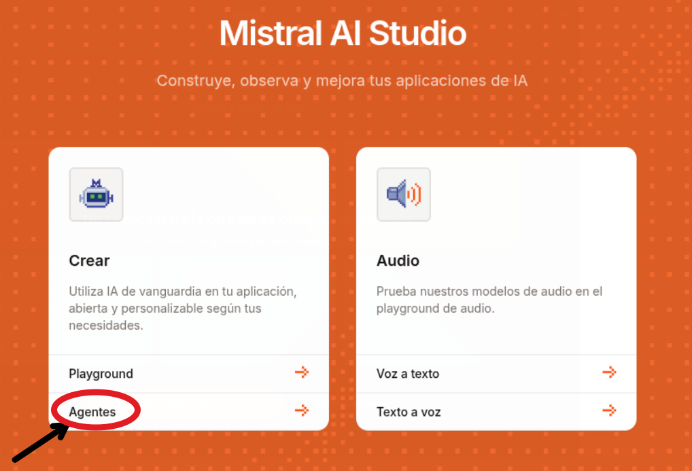
También podemos bajando al apartado de "Crear un agente":
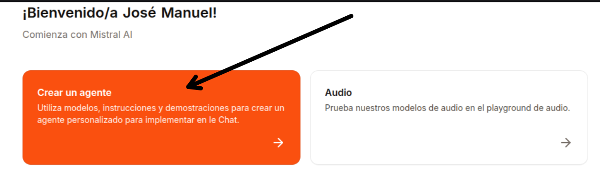
2.- Le damos el nombre al agente, por ejemplo de Meeting Summarizer. Añadimos una pequeña descripción para saber qué hace el agente (útil por si tenemos un listado de agentes bastante grande).
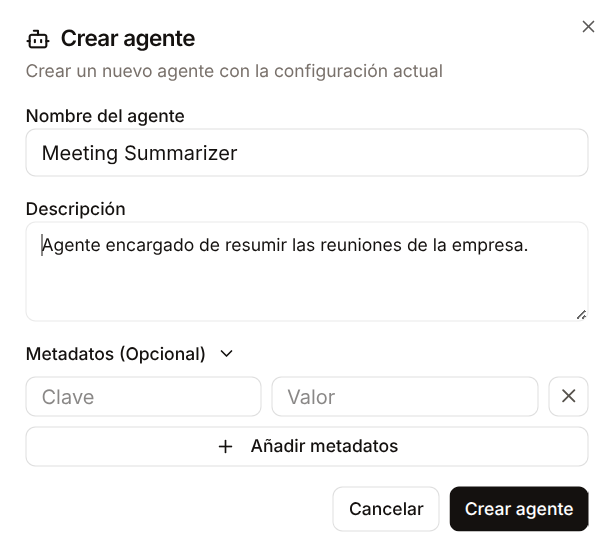
3.- Después de crear el agente, veremos el idenficador único para poder utilizar como API en aplicaciones externas y el código en Python, Typescript o descargar vía cURL:
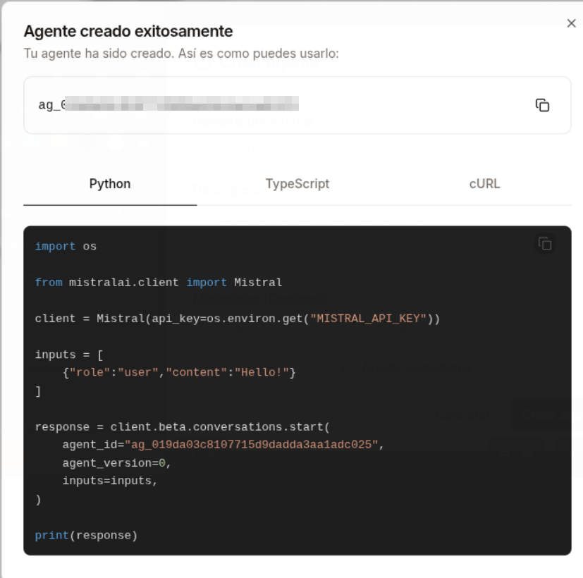
Más adelante usaremos el agente en modo API junto a una aplicación.
Paso 2: Elegir el modelo, temperatura y las instrucciones
1.- Por defecto, Mistra IA Studio elige el modelo "Mistral Medium". Es una buena opción predeterminada.
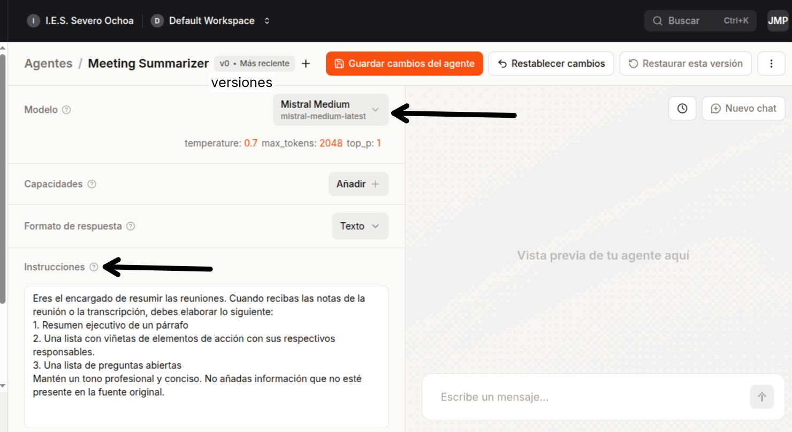
2.- Establecer la Temperatura, max_tokens y top_p:
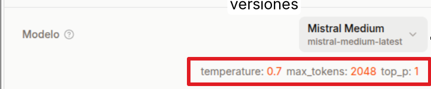
- Temperatura: Usaremos 0.2 para obtener resultados consistentes y deterministas o 0.7 para respuestas más creativas.
max_tokens: Recuento de tokens incluye tanto los tokens de entrada como los de salida.top_p: sirve para controlar la diversidad, creatividad y aleatoriedad de las respuestas generadas.top_pbajo (ej. 0.1 - 0.3): El modelo solo considerará el conjunto mínimo de palabras altamente probables (respuestas directas, precisas y más coherentes, ideales para tareas técnicas, resumen de datos o respuestas fácticas)top_palto (ej. 0.8 - 1.0): El modelo considera un conjunto mucho más amplio de palabras, incluyendo opciones menos probables (aumenta la creatividad, variabilidad y diversidad en el texto, ideal para escritura creativa o lluvia de ideas)
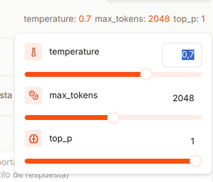
Las instrucciones determinan el comportamiento del agente en cada conversación. Debemos ser específicos sobre la tarea, el formato y el tono.
Ventana de contexto (Context window)
| Modelo | Max context length |
|---|---|
| Mistral Small | 32,768 tokens |
| Mistral Medium | 32,768 tokens |
| Mistral Large | 131,072 tokens |
| Codestral | 32,768 tokens |
| Ministral 3B / 8B | 131,072 tokens |
| Pixtral Large | 131,0728 tokens |
- Las solicitudes que superan el período de tiempo permitido por el modelo generan un
400 Bad Request error. - El recuento de tokens incluye tanto los tokens de entrada como los de salida. Debemos planificar adecuadamente la variable
max_tokens.
3.- En el campo Instrucciones, escribimos un mensaje del sistema. Por ejemplo:
Eres el encargado de resumir las reuniones. Cuando recibas las notas de la reunión o la transcripción, debes elaborar lo siguiente:
1. Resumen ejecutivo de un párrafo
2. Una lista con viñetas de elementos de acción con sus respectivos responsables.
3. Una lista de preguntas abiertas
Mantén un tono profesional y conciso. No añadas información que no esté presente en la fuente original.
Unas buenas instrucciones definen qué debe hacer el agente, el formato de salida y qué debe evitar. Lo ideal sería probar con algunos ejemplos de conversaciones y perfeccionar el proceso.
Capacidades (herramientas)
Las capacidades (herramientas) mejoran al agente más allá de la generación de texto.
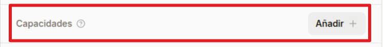
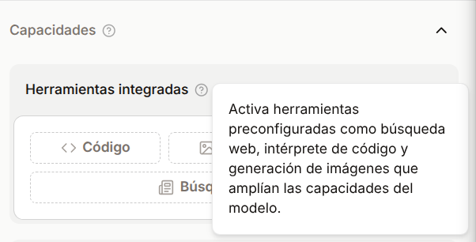
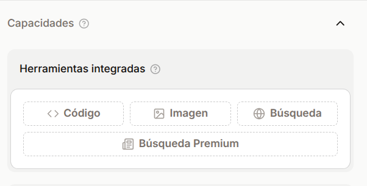
Desplázate hasta Capacidades (tools) y activa las funciones que necesites:
- **Código**: ejecuta código Python para cálculos, gráficos y análisis de datos.
- **Imagen**: permite que el modelo genere imágenes.
- **Búsqueda**: buscar información actualizada en internet.
- **Búsqueda Premium**: buscar información actualizada y verificada en internet.
Por ahora no vamos a utilizar ninguna herramienta (capacidad).
Funciones propias
Podemos definir funciones personalizadas las cuales el modelo puede llamar a interactuar con APIs externas o realizar tareas específicas.
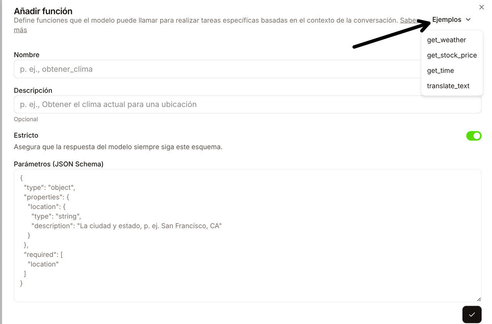
Ejemplo de función get_weather. Ojo debemos seguir el formato de respuesta aunque se puede modificar.
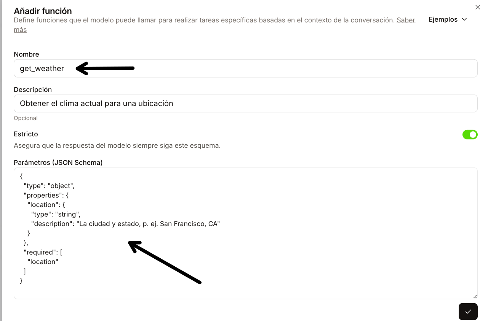
Paso 5: Probar y compartir en "Le Chat"
1.- Podemos probar iniciando una conversación directamente con el agente: copiar y pegar este ejemplo de una reunión ficticia y vericamos que el resultado coincida con las instrucciones especificadas:
Reunión mensual de marketing – VivaCloud
Fecha: 15 de abril de 2026
Hora: 10:00–11:30
Asistentes:
- Laura Gómez (Directora de Marketing)
- Marcos Pérez (Performance Marketing)
- Ana Ruiz (Content & Social Media)
- Diego Martín (Product Marketing)
- Carla López (CRM & Email Marketing)
- Sergio Díaz (Data Analyst, invitado)
Laura: Buenos días a todos. El objetivo de hoy es revisar resultados del primer trimestre, definir el foco del Q2 y acordar las campañas clave. Me gustaría que empezáramos por una foto general de performance y luego bajamos a contenido, producto y CRM.
Sergio: Perfecto, empiezo yo. A nivel global, en el Q1 hemos aumentado un 18% los registros de prueba frente al Q4, pero el coste por lead (CPL) ha subido un 12%. El canal que mejor se ha comportado es paid search, sobre todo en campañas de marca y long tail. Social de pago ha generado mucho tráfico pero con tasa de conversión bastante baja.
Laura: ¿Tenemos identificado por qué social convierte tan poco?
Sergio: Principalmente porque la segmentación ha sido demasiado amplia y los mensajes no están alineados con las páginas de destino. Vemos muchos clics curiosos, pero la gente se cae en la landing porque no entiende bien la propuesta de valor.
Marcos: Sí, ahí asumo la parte de responsabilidad. Hemos ido demasiado agresivos en alcance con creatividades muy generales. Para Q2 propongo reducir audiencias, centrarnos en dos o tres segmentos clave y alinear mejor mensajes con las landings.
Laura: Bien. Quiero que en Q2 prioricemos calidad de lead sobre volumen. Prefiero un crecimiento más moderado pero con mejor conversión a cliente. Marcos, luego te pido un plan concreto, pero sigamos con la visión general.
Carla: Por la parte de CRM, hemos enviado tres grandes campañas de email nurture para los leads de prueba: una serie de onboarding, una serie de casos de éxito y un reengagement para cuentas inactivas. La tasa de apertura media está en torno al 38%, pero la tasa de clic ha bajado en la última serie.
Laura: ¿Alguna hipótesis?
Carla: Creo que hemos mezclado demasiado contenido de producto con mensajes comerciales directos. Cuando el email es muy “vendedor”, la gente hace menos clic. Funcionan mejor los correos que llevan a un contenido útil, como guías y checklists, y desde ahí plantean el CTA de demo o upgrade.
Ana: Esto se ve también en social. Los posts que son pura promo no se comparten nada; los que son educativos, con tips o plantillas, generan bastante más interacción.
Laura: Ok, entonces mensaje para todos: en Q2 reforzamos contenido educativo y de valor en todos los canales, y el empuje comercial lo dejamos como siguiente paso, no como gancho inicial.
Copiar el texto en el chat y probar el funcionamiento:
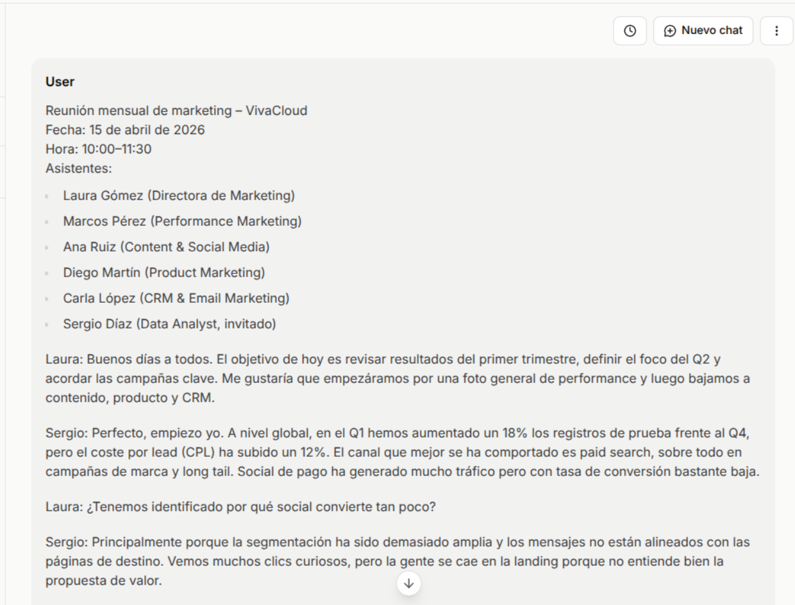
Parte del resultado:
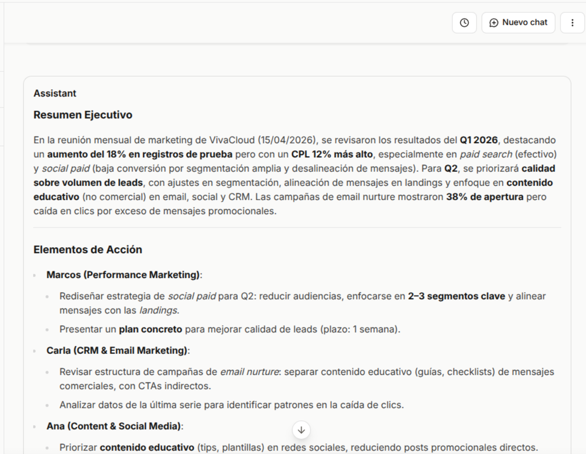
Podemos comprobar como no funciona para datos actualizados:
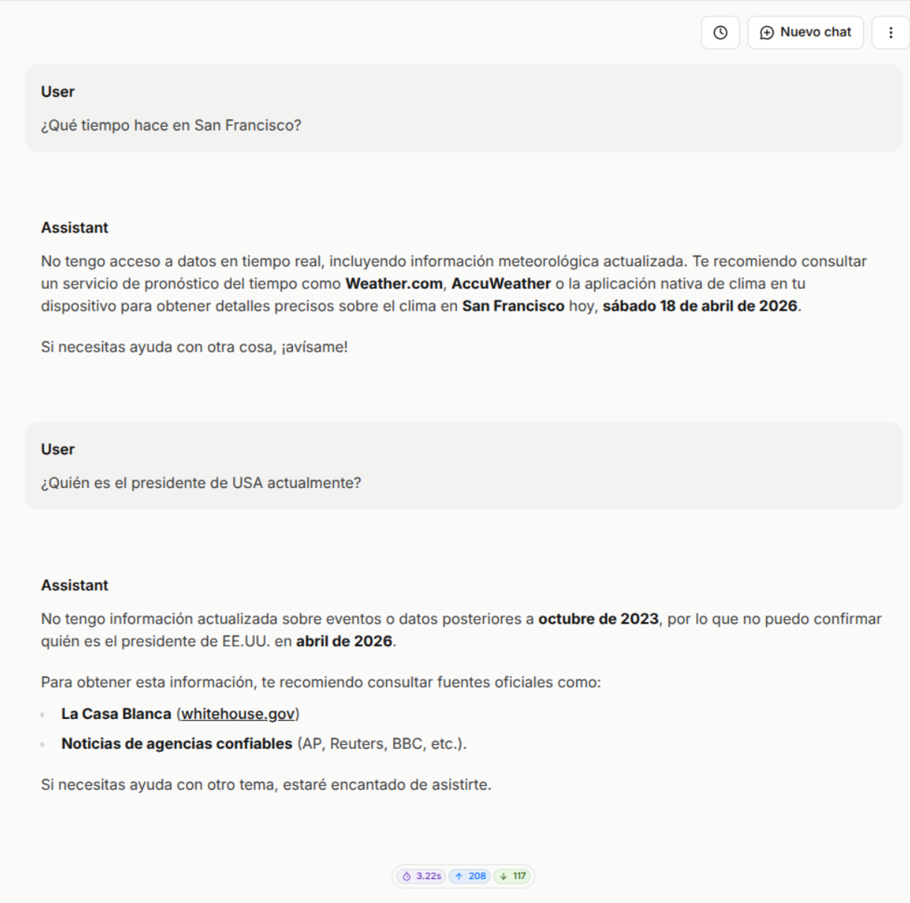
3.- Para compartir con la organización:
Hacemos clic en el menú de tres puntos del agente.
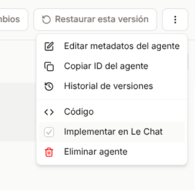
Seleccionamos "Implementar en Le Chat"
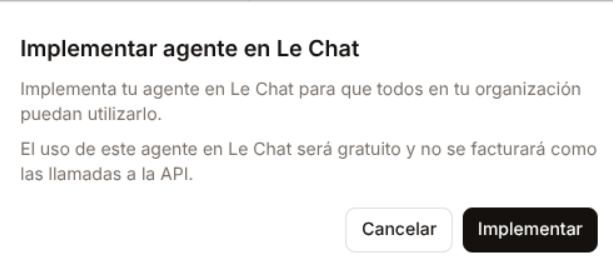
Accedemos a Le Chat para probar el agente:
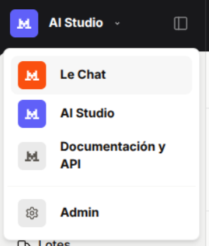
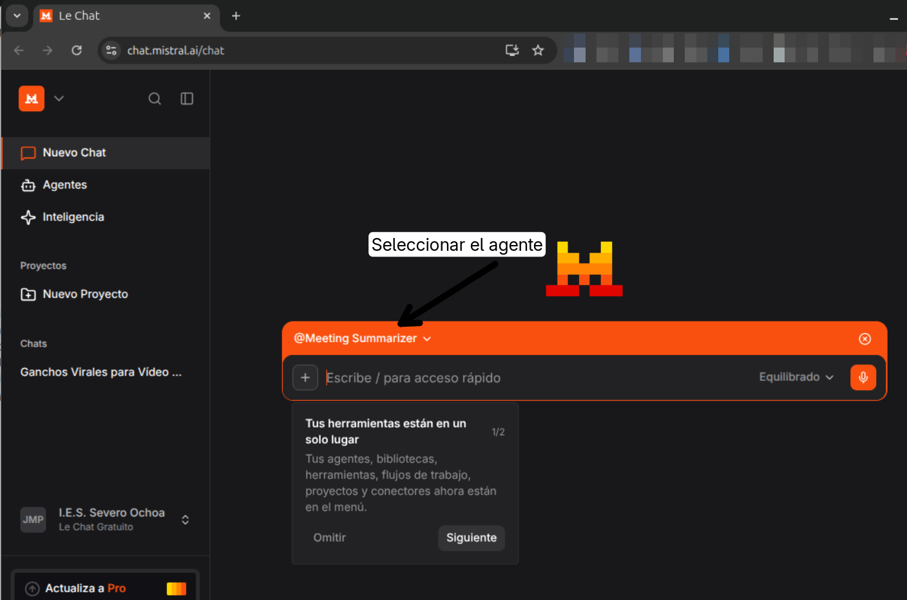
Los miembros de la organización pueden usar el agente desde su propia barra lateral de Le Chat sin necesidad de ver ni modificar las instrucciones.
Hacemos una prueba subiendo un pdf de una reunión de marketing de una empresa ficticia:
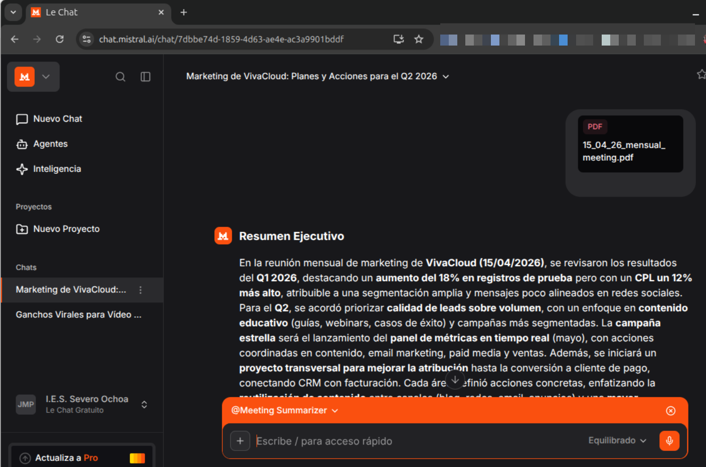
Ejemplo de respuesta del agente a un dato que sí tiene en su base de conocimientos:
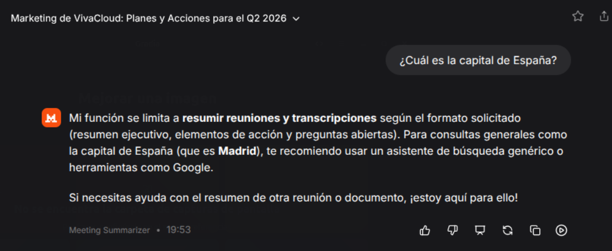
4. Escenario de trabajo: “Tutor IA de apoyo al módulo”
En toda la sesión trabajaremos con el mismo caso práctico:
Un agente llamado TutorFP-IA, cuyo objetivo es ayudar a estudiantes de ciclos formativos de informática a entender conceptos de IA y Big Data.
4.1. Comportamiento deseado
El agente:
- Responde siempre en castellano.
- Explica conceptos de forma clara, con ejemplos sencillos.
- Adapta el nivel al de estudiantes de FP de grado superior.
- Pide aclaraciones si la pregunta no está bien definida.
- No se inventa normativa ni datos críticos (lo indica cuando no sabe algo).
5. Parte 1 – Creación del agente en la plataforma de Mistral
Nota: esta parte se realiza en la interfaz web de Mistral AI con la cuenta configurada por el profesor.
5.1. Pasos generales (orientativos)
- Accede a la consola web de Mistral AI e inicia sesión.
- Ve a la sección de Agents (Agentes).
-
Crea un nuevo agente:
-
Nombre:
TutorFP-IA. - Descripción: Asistente didáctico para estudiantes de FP de informática.
- Idioma por defecto: Español.
-
Rol/instrucciones: ver sección siguiente.
-
Guarda el agente y copia su Agent ID.
- Este identificador será necesario para usar el agente desde Python.
5.2. Instrucciones sugeridas para el agente
Puedes adaptar este texto a tus necesidades:
Eres TutorFP-IA, un asistente de Inteligencia Artificial para estudiantes de ciclos formativos de grado superior de informática.
Tu comportamiento debe seguir estas reglas:
- Respondes SIEMPRE en castellano.
- Explicas los conceptos de forma clara, con ejemplos sencillos, adecuados a estudiantes de FP.
- Si la pregunta es ambigua o faltan datos importantes, primero pides aclaraciones.
- Cuando hables de normativa, leyes u otros datos sensibles, indicas siempre que deben verificarse con fuentes oficiales.
- Si no sabes algo, lo dices de forma explícita en lugar de inventar la respuesta.
- Puedes usar enumeraciones y listas para organizar tus explicaciones, pero intenta no ser excesivamente largo.
6. Parte 2 – Preparación del entorno Python
Esta parte se realiza en local, en el entorno de desarrollo del alumno.
6.1. Requisitos
- Python 3.10 o superior.
- Entorno virtual creado para el proyecto.
- Paquete oficial de Mistral AI instalado:
pip install mistralai
6.2. Variables de entorno necesarias
Define al menos estas dos variables:
MISTRAL_API_KEY: tu clave de API de Mistral AI.MISTRAL_AGENT_ID: elagent_iddel agenteTutorFP-IA.
En Linux/macOS (ejemplo):
export MISTRAL_API_KEY="TU_CLAVE_REAL"
export MISTRAL_AGENT_ID="ag_xxx..."
En Windows (PowerShell):
$env:MISTRAL_API_KEY="TU_CLAVE_REAL"
$env:MISTRAL_AGENT_ID="ag_xxx..."
7. Parte 3 – Primer script: invocar al agente desde Python
Crea un archivo, por ejemplo llm02_agente_mistral.py, con el siguiente contenido base:
import os
from mistralai import Mistral
def main():
api_key = os.getenv("MISTRAL_API_KEY", "").strip()
agent_id = os.getenv("MISTRAL_AGENT_ID", "").strip()
if not api_key:
raise ValueError("Falta la variable de entorno MISTRAL_API_KEY")
if not agent_id:
raise ValueError("Falta la variable de entorno MISTRAL_AGENT_ID")
client = Mistral(api_key=api_key)
# Primer mensaje del usuario
inputs = [
{
"role": "user",
"content": "Hola, ¿puedes explicarme qué es un token en un LLM con un ejemplo sencillo?"
}
]
response = client.beta.conversations.start(
agent_id=agent_id,
agent_version=0,
inputs=inputs,
)
print("=== RESPUESTA DEL AGENTE ===")
print(response)
if __name__ == "__main__":
main()
7.1. Qué hace este script
- Lee las variables de entorno
MISTRAL_API_KEYyMISTRAL_AGENT_ID. - Crea un cliente
Mistralcon la API key. - Construye una lista de
inputscon un mensaje de usuario. - Llama a
client.beta.conversations.start(...)para iniciar una conversación con el agenteTutorFP-IA. - Imprime el objeto de respuesta (que incluye información de la conversación y del mensaje generado).
7.2. Ejecución
Desde el terminal:
python llm02_agente_mistral.py
8. Actividades prácticas de la sesión
Actividad 1 – Comprobación de variables y conexión
-
Modifica el script para que, antes de crear el cliente, imprima:
-
si
MISTRAL_API_KEYestá cargada, -
si
MISTRAL_AGENT_IDestá cargado. -
Ejecuta el script y verifica que ambas están correctamente definidas.
Fragmento de ayuda:
print("API key cargada:", bool(api_key))
print("Agent ID cargado:", bool(agent_id))
print("Agent ID:", agent_id)
- Si alguna no está cargada, corrige la configuración de tu entorno.
Actividad 2 – Cambiar la pregunta y observar el comportamiento
-
Modifica el contenido del mensaje de usuario:
-
Pregunta 1:
¿Qué es la Inteligencia Artificial? - Pregunta 2:
Explícame qué es el overfitting con un ejemplo en clasificación. -
Pregunta 3:
Compara brevemente un árbol de decisión y una red neuronal. -
Observa si el agente:
-
responde en castellano,
- adapta el nivel,
-
pide aclaraciones si la pregunta es ambigua.
-
Comenta (en un pequeño
.mdo como comentario en el código): -
¿En qué se nota que el agente tiene instrucciones específicas?
- ¿Qué diferencia aprecias respecto a un simple modelo sin agent?
Actividad 3 – Simular una conversación con varias preguntas
Aunque la API de Conversations permite mantener el estado de una conversación en la plataforma, en esta sesión haremos una simulación simple de intercambio.
- Dentro de
main(), sustituye el bloque de mensaje único por un bucle:
while True:
user_input = input("\nTú: ")
if user_input.lower() in {"salir", "exit", "quit"}:
break
inputs = [{"role": "user", "content": user_input}]
response = client.beta.conversations.start(
agent_id=agent_id,
agent_version=0,
inputs=inputs,
)
print("\nAgente:", response)
- Haz varias preguntas seguidas relacionadas entre sí (por ejemplo, todas sobre LLMs).
-
Discute en clase:
-
¿Qué parte de la memoria se está gestionando aquí manualmente?
- ¿Qué crees que permitiría hacer una gestión más robusta de conversaciones persistentes?
Actividad 4 – Detectar errores y sus causas
Durante la sesión pueden aparecer errores como:
Unauthorized (401): problemas con la API key (ausente, incorrecta, con espacios, etc.).- Errores de
agent_id: agente inexistente o mal copiado. - Timeouts o problemas de red.
Tarea:
- Simula uno de estos errores (por ejemplo, cambiando un carácter del
agent_id). - Observa el mensaje de error.
-
Escribe una breve nota explicando:
-
qué crees que significa,
- cómo lo has resuelto.
9. Comparación con la sesión 1
Es importante que el alumnado vea claramente el salto respecto a la primera sesión.
9.1. Sesión 1 (LLM01)
- Interacción directa con un modelo.
- System prompt definido en el código o en el entorno, pero no centralizado en un agente.
- Foco en:
- tokens,
- contexto,
- prompts.
9.2. Sesión 2 (LLM02)
- Interacción a través de un agente de Mistral.
- System prompt e instrucciones encapsulados en el agente.
- Foco en:
- diferencia entre modelo y agente,
- uso de la API de Agents & Conversations,
- ventajas de centralizar configuración y rol.
10. Preguntas de reflexión
Puedes proponer estas preguntas para cierre de sesión (por escrito o discusión):
- ¿Qué ventaja tiene definir un agente frente a llamar directamente a un modelo?
- ¿Qué elementos del comportamiento del agente has podido controlar desde sus instrucciones?
- ¿En qué tipo de proyectos te parece especialmente útil trabajar con agentes?
- ¿Qué limitaciones sigue teniendo el sistema actual que crees que se pueden mejorar con herramientas (tools) o RAG en sesiones posteriores?
11. Relación con sesiones futuras
Lo que has aprendido en LLM02 servirá como base para:
- Comparar en próximas sesiones este enfoque con frameworks de agentes en código (smolagents).
- Entender cómo un agente puede usar tools para realizar acciones externas.
- Introducir RAG y agentes con LangChain para trabajar con documentación propia del módulo.
En resumen, en esta sesión has dado el primer paso hacia aplicaciones LLM más estructuradas, donde el modelo ya no es solo “el que responde”, sino parte de un agente con rol y memoria definidos.